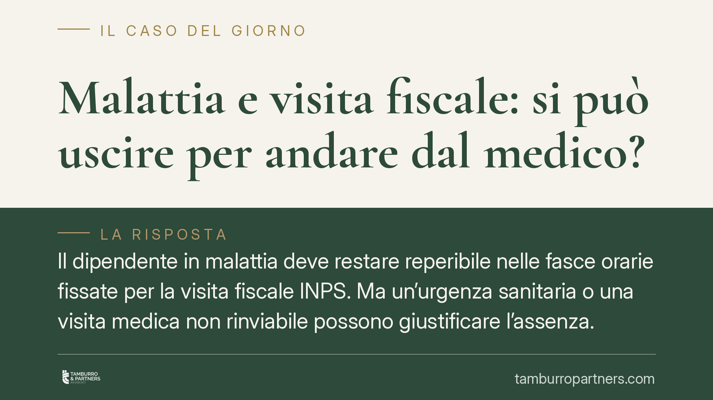

Malattia e visita fiscale: si può uscire per andare dal medico?
Il dipendente in malattia deve restare reperibile nelle fasce orarie fissate per la visita fiscale INPS. Ma un'urgenza sanitaria o una visita medica non rinviabile possono giustificare l'assenza. La differenza tra assenza legittima e comportamento sanzionabile passa per un dato pratico: la documentabilità dell'uscita. Vediamo regole, rischi e cautele.

Il quadro normativo
Durante il periodo di malattia il lavoratore è tenuto a un obbligo di reperibilità presso il domicilio comunicato, per consentire il controllo medico-legale dell'INPS. L'obbligo deriva dal dovere di correttezza e buona fede nell'esecuzione del rapporto (art. 1175 cod. civ.) e trova la sua base sanzionatoria previdenziale nell'art. 5 del D.L. 663/1979, convertito nella L. 638/1983.
Le fasce di reperibilità sono state uniformate dal D.M. 206/2017, che ha istituito il cosiddetto Polo Unico della visita fiscale, affidando all'INPS i controlli sia nel settore privato sia nel pubblico impiego. Gli orari, però, restano differenziati:
- Settore privato: dalle 10:00 alle 12:00 e dalle 17:00 alle 19:00, tutti i giorni, festivi compresi;
- Pubblico impiego: dalle 9:00 alle 13:00 e dalle 15:00 alle 18:00, tutti i giorni, festivi inclusi.
È un punto spesso frainteso: chi lavora nel pubblico ha fasce più ampie, quindi un margine di uscita più ristretto.
Uscire per una visita medica: quando è legittimo
L'assenza dal domicilio durante la fascia di reperibilità non è di per sé un illecito assoluto. La giurisprudenza riconosce che l'obbligo cede di fronte a cause di forza maggiore o a esigenze sanitarie che impongono l'allontanamento, come una visita specialistica o un accertamento diagnostico non rinviabile ad altra fascia oraria.
Il punto decisivo non è il fatto in sé, ma la sua giustificabilità documentale. Chi si allontana per ragioni di cura deve poter dimostrare, con certificato, prenotazione o attestazione dell'ambulatorio, che l'uscita era necessaria e collocata in quella specifica fascia. In assenza di prova, l'assenza viene trattata come mancata reperibilità.
La Corte di Cassazione, sezione lavoro, ha più volte chiarito che l'assenza alla visita fiscale non equivale automaticamente a simulazione della malattia: il datore o l'INPS non possono presumere lo stato di piena idoneità al lavoro dal solo fatto che il domicilio fosse vuoto. Occorre valutare in concreto la causa dell'allontanamento e la sua compatibilità con la patologia.
Le conseguenze pratiche
Sul piano previdenziale, la mancata reperibilità senza giustificazione comporta la decurtazione dell'indennità di malattia, secondo la scansione prevista dall'art. 5 L. 638/1983 (perdita fino al 100% per i primi dieci giorni in caso di prima assenza ingiustificata, e riduzioni successive).
Sul piano disciplinare, il datore può contestare la condotta. Qui va tenuta ferma una distinzione:
- la giusta causa di licenziamento (art. 2119 cod. civ.) presuppone un comportamento così grave da non consentire la prosecuzione neppure provvisoria del rapporto: tipicamente la simulazione della malattia o lo svolgimento di attività incompatibili con lo stato dichiarato;
- il giustificato motivo soggettivo copre inadempimenti meno gravi ma comunque rilevanti.
La semplice assenza a una visita fiscale, isolata e priva di intento fraudolento, difficilmente integra da sola una giusta causa. Resta fermo il principio di proporzionalità tra fatto e sanzione, oltre al rispetto delle garanzie procedurali dell'art. 7 dello Statuto dei lavoratori: contestazione scritta, termine a difesa, adeguatezza della misura.
Cosa fare in concreto
- Verifica la tua fascia oraria in base al settore (privato o pubblico): gli orari non coincidono e sbagliare margine è l'errore più frequente.
- Programma le visite fuori dalle fasce di reperibilità, quando la patologia lo consente.
- Conserva ogni documento dell'uscita: prenotazione, referto, attestazione con data e orario. Senza prova, l'assenza è indifendibile.
- Comunica in anticipo al datore o all'INPS, ove possibile, l'esigenza di allontanarti per motivi sanitari.
- In caso di contestazione disciplinare o previdenziale, è opportuno valutare la propria posizione con un professionista, verificando termini di difesa e proporzionalità della sanzione.
La reperibilità non è un obbligo cieco: è un dovere che ammette eccezioni, purché chi se ne avvale sia in grado di dimostrarle.
---
*Contributo informativo a cura di Tamburro & Partners Avvocati - Avv. Giuseppe Tamburro. Non costituisce parere legale.*
Ogni storia di lavoro ha i suoi tempi.
Se gestisci HR e vuoi un confronto su contenzioso, ispezioni o licenziamenti, scrivi allo studio. Ti rispondiamo entro un giorno lavorativo.